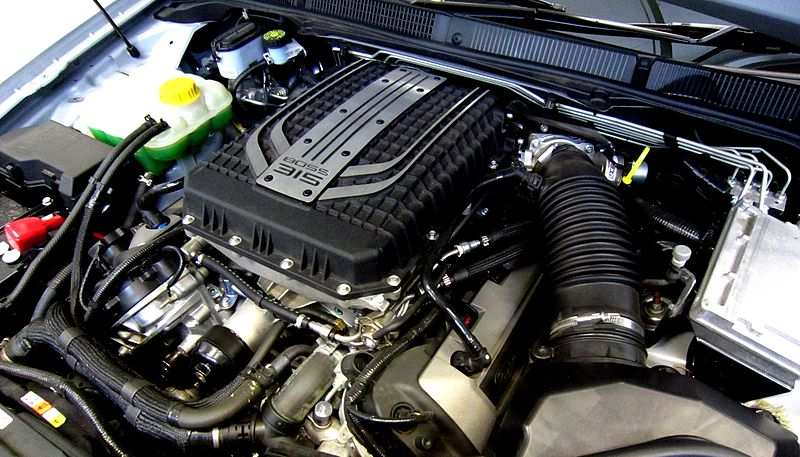
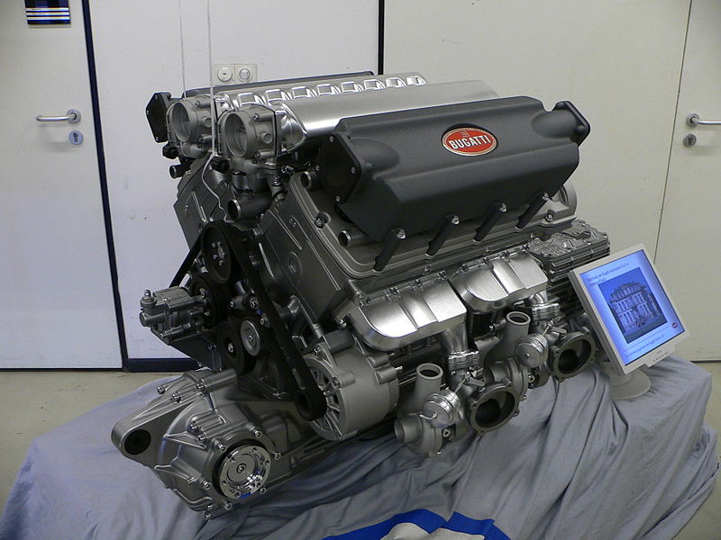
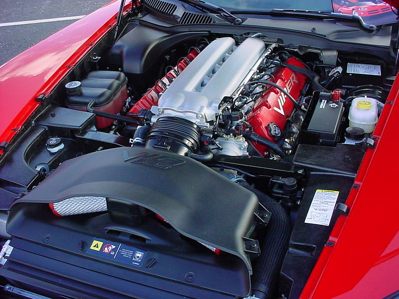
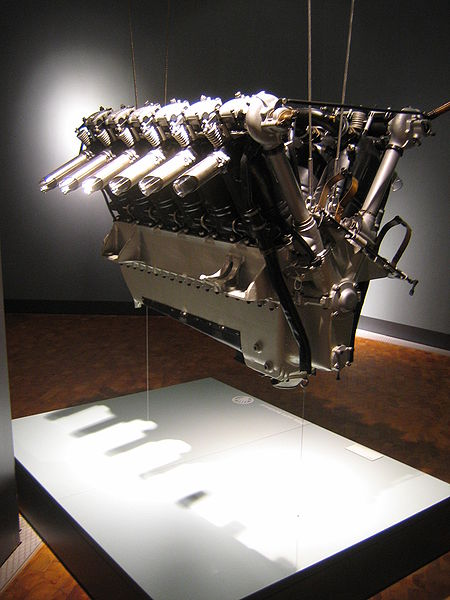
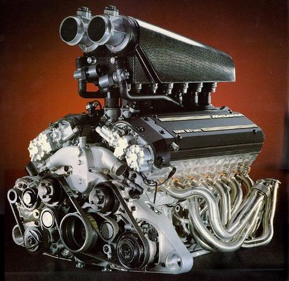

SuperCars Engines
|  |
A V8 engine is an eight-cylinder V configuration engine with the cylinders mounted on the crankcase in two sets (or banks) of four, with all eight pistons driving a common crankshaft.[1] Most banks are set at a right angle (90°) to each other, some at a narrower angle, with 45°, 60°, and 72° most common. In its simplest form, the V8 is basically two parallel inline-four engines sharing a common crankshaft. However, this simple configuration, with a flat- or single-plane crankshaft, has the same secondary dynamic imbalance problems as two straight-4s, resulting in vibrations in large engine displacements.[2] Since the 1920s, most V8s have used the somewhat more complex crossplane crankshaft with heavy counterweights to eliminate the vibrations. This results in an engine that is smoother than a V6, while being considerably less expensive than a V12. Many racing V8s continue to use the single plane crankshaft because it allows faster acceleration and more efficient exhaust system designs. |
V8 ENGINE Price130k$ - 200k$ |
|---|---|---|
|  |
A W16 engine is a sixteen cylinder piston engine with four banks of four cylinders in a W configuration. W16 engines are rarely produced, with the notable exception of the Volkswagen Group 8.0 WR16 engine that has been used since 2005 in the Bugatti Veyron, Bugatti Chiron and their related models. |
W16 ENGINE Price~10k$ |
|  |
The V10 configuration is not an inherently balanced design like a straight-6, V12, boxer engine, or V8 (ignoring the counterweights) and does still have a small second order rocking motion, which can only be compensated by balance shafts. |
V10 ENGINE Price15k$ - 20k$ |
|  |
A V12 engine is a V engine with 12 cylinders mounted on the crankcase in two banks of six cylinders each, usually but not always at a 60° angle to each other, with all 12 pistons driving a common crankshaft.[1] Because of the balanced nature of the engine, and the smooth delivery of power, these engines were popular in early luxury automobiles, boats, and aircraft. The powerful V12 engines used in aircraft of the Second World War were later displaced by jet turbine engines. The V12 configuration fits well in longer vehicles such as locomotives or heavy trucks. Compared to internal combustion engines with fewer cylinders and similar power ratings, a V12 will have more moving parts, a more complex exhaust system, and will be more expensive to manufacture. V12 engines are rarely found in modern luxury automobiles or highway trucks, but are still used in stationary engines, ships, locomotives, and military vehicles. |
V12 ENGINE Price~250k$ |
|  |
The BMW M70 is a SOHC V12 petrol engine, which was BMW's first production V12[1] and was produced from 1987 to 1996. The BMW S70/2 engine, largely unrelated to the M70 and S70B56 engines, is a DOHC V12 petrol engine, which powered the 1993 to 1998 McLaren F1. |
BMW M70 ENGINE Price~150k$ |